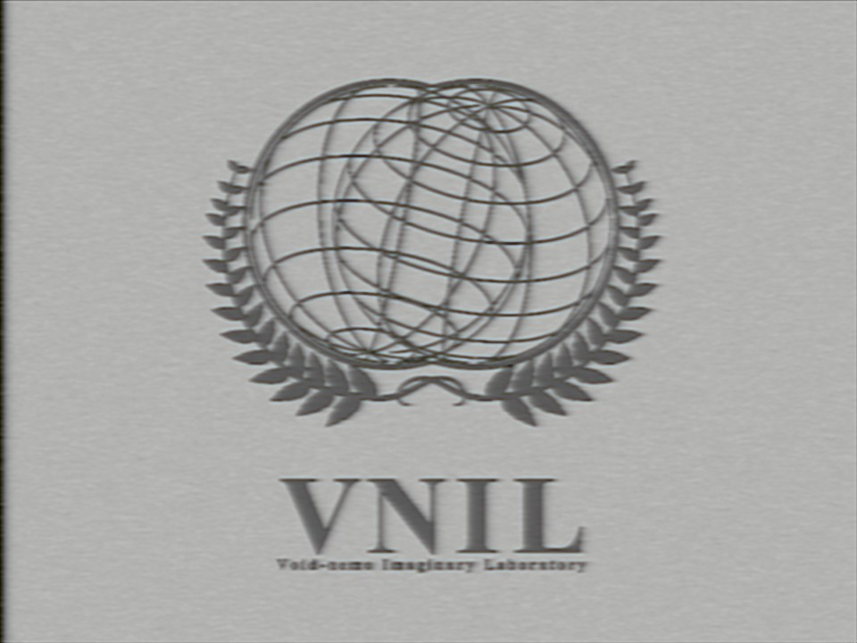

ボイドネモ架空世界研究所
出典: フリー個人网站『イデオアベス(Ideoaves)』
|
ボイドネモ架空世界研究所 VN架研・VNIL | |
|---|---|
|  ロゴ | |
| SNS | |
| void_nemo | |
惑星”白露”

白露とその衛星pola
詳細は「白露」を参照
白露は現段階で最も情報量の多い架空惑星です。鳥類を知的生命体の位置においた文化構築を目指しています。3DCGやイラストを使った画像・映像資料の多い創作です。
架空言語
finomimu
詳細は「finomimu」を参照
架空惑星の海洋地域で話されているという設定の芸術言語。この言語で表現するのは共時的な状態についてで、たとえば「私はりんごを食べました」という文章を本言語で翻訳した場合、その日本語直訳は「私によってされたりんごの食事」となる。

例
回遊文字
回遊文字の例
単語の順番や文字の並びなどが時間によって変化します。読み物と言うよりも芸術言語の側面が非常に強いビジュアル表現です。
現時点で単語数は110個、文字数は9個、語形変化（動き方の変化）は動詞が5つ（時制）、名詞が9つ（格）あります。
最終更新 2023年11月24日 (金) 14:52
（日時は個人設定で未設定ならばUTC）。
テキスト、画像はクリエイティブ・コモンズ表示-継承ライセンスの下で利用可能です。追加の条件が適用される場合があります。
テキスト、画像はクリエイティブ・コモンズ表示-継承ライセンスの下で利用可能です。追加の条件が適用される場合があります。